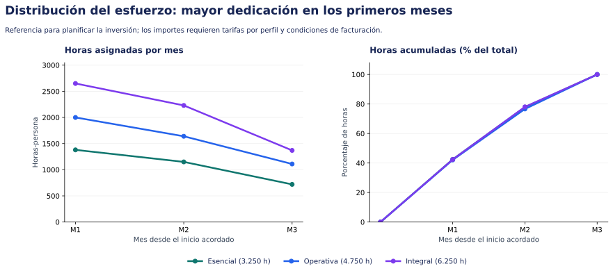
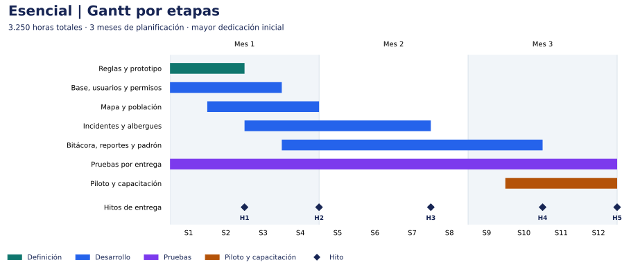
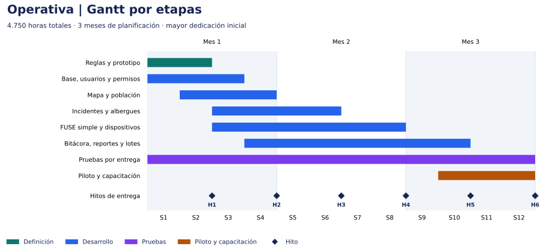
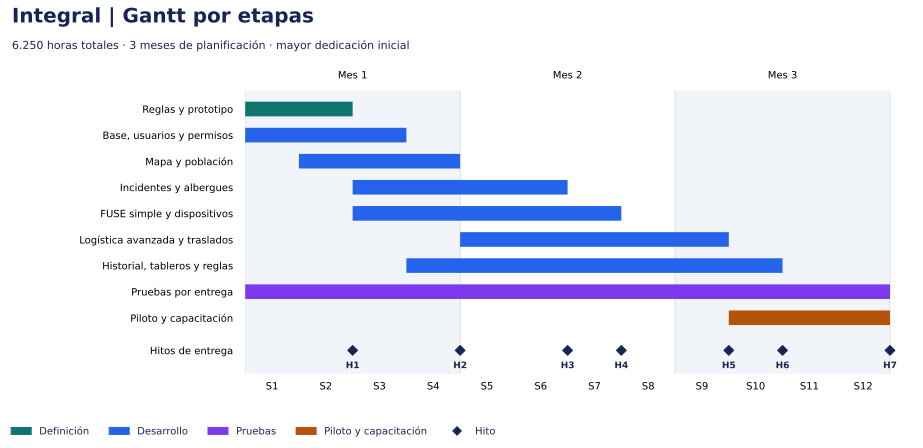

Planificación de las tres propuestas
Gantt, entregables, equipo y distribución de horas
| Campo | Detalle |
|---|---|
| Proyecto | Plataforma Provincial de Gestión Social ante Emergencias, Provincia del Chaco |
| Fecha | 16 de octubre de 2026 |
| Estado | Escenarios propuestos para revisión; dedicaciones e hitos a confirmar |
| Ventana acordada para planificar | Máximo tres meses desde el inicio acordado |
| Criterio de planificación | Concentrar equipo y esfuerzo al comienzo para adelantar entregables utilizables |
| Referencia | Comparación funcional y estimación de las tres alternativas |
Cómo leer este anexo
La propuesta base mantiene su estimación en horas. Este anexo distribuye esas mismas horas en escenarios de equipo y calendario. Se elige una alternativa: sus horas y sus meses no se suman con los de las otras.
1. Criterio de planificación
Se propone incorporar desde el comienzo a los analistas y al equipo de desarrollo de la alternativa elegida. Diseño y QA acompañan las primeras entregas; el trabajo avanza por circuitos y la dedicación se reduce a medida que se completa el alcance.
Las tres alternativas se organizan para completar su alcance dentro de tres meses desde el inicio acordado. La primera versión utilizable de mapa y población se plantea al cierre del primer mes. Operativa e Integral incorporan las cuatro mesas durante el segundo mes. El tercero completa las funciones restantes, el piloto y la aceptación.
Para sostener esa ventana se propone un equipo inicial más amplio, con varios circuitos en desarrollo simultáneo. Las horas totales y el alcance de cada alternativa se conservan. El dimensionamiento expresa capacidad prevista; el plazo requiere validar las dependencias y disponer del equipo desde el inicio.
Supuestos del escenario
- M1, M2 y M3 son bloques de cuatro semanas: el Gantt comprende doce semanas dentro de una ventana máxima de tres meses. La fecha de cierre se calculará desde el inicio acordado; feriados y disponibilidad se contemplarán al fijar el calendario.
- Se asignan hasta 140 horas de trabajo por persona y mes de planificación. La capacidad incluye las actividades de su disciplina, como revisión y correcciones en desarrollo. Es un supuesto de planificación a confirmar.
- Los totales son los escenarios centrales: 3.250, 4.750 y 6.250 horas. Cada disciplina conserva exactamente sus horas de la propuesta base.
- El equipo completo se encuentra disponible al inicio. El escenario no incluye un período previo de contratación o incorporación dentro de las doce semanas.
- Se propone que los referentes respondan las validaciones en hasta dos días hábiles. Esta disponibilidad debe acordarse para sostener los hitos.
- Durante las primeras dos semanas se acuerdan campos, permisos, formatos de intercambio y reglas comunes. El análisis detallado continúa por circuito y acompaña a los equipos que desarrollan en paralelo.
- La primera semana permite revisar dependencias y reparto de módulos. La conducción técnica, la integración y las correcciones consumen horas del presupuesto existente. Si esa revisión exige trabajo adicional, se revisará la estimación antes de comprometer el cronograma.
- La mesa de ayuda funcional opcional se contrata aparte y no forma parte de estas curvas. Las ampliaciones independientes tampoco están incluidas.
La inversión se representa mediante horas asignadas. Para convertirla en importes se necesitan tarifas por perfil y condiciones de facturación. El porcentaje de horas acumuladas mide esfuerzo asignado, no porcentaje de funcionalidades aceptadas.
2. Comparación de escenarios
| Alternativa | Horas | Meses del escenario | Desarrolladores al inicio | Horas en M1–M2 | % del total en M1–M2 |
|---|---|---|---|---|---|
| Esencial | 3.250 | 3 | 6 | 2.530 | 77,8% |
| Operativa | 4.750 | 3 | 9 | 3.640 | 76,6% |
| Integral | 6.250 | 3 | 12 | 4.880 | 78,1% |
En Integral, los primeros dos meses concentran 4.880 horas, el 78,1% del total. El tercer mes reúne 1.370 horas para completar los circuitos avanzados, validar el conjunto y capacitar a los equipos.
La mayor dotación inicial permite trabajar por frentes. Esencial distribuye el desarrollo entre mapa y población, atención y albergues, y funciones comunes. Operativa incorpora un frente de FUSE y dispositivos. Integral separa además logística avanzada y seguimiento. Un responsable técnico coordina contratos de datos, revisiones e integración dentro de las horas de Desarrollo.



3. Propuesta Esencial
Escenario: 3.250 horas distribuidas en 3 meses de planificación.



Etapas y entregables
| Etapa | Ventana propuesta | Resultado |
|---|---|---|
| Reglas y prototipo | M1 | Reglas, permisos y prototipo de las pantallas principales. |
| Base, usuarios y permisos | M1 | Acceso y modelo común para las funciones incluidas. |
| Mapa y población | M1 | Mapa, personas, familias y relevamientos básicos. |
| Incidentes y albergues | M1–M2 | Seguimiento de incidentes, ingresos, egresos y ocupación. |
| Bitácora, reportes y padrón | M1–M3 | Pendientes, exportaciones e importación desde una plantilla. |
| Pruebas por entrega | M1–M3 | Validación funcional, permisos, concurrencia y correcciones. |
| Piloto y capacitación | M3 | Uso supervisado, manuales, capacitación y conformidad final. |
La tabla indica los meses involucrados; las barras del Gantt muestran los solapamientos dentro de cada mes. Las horas de análisis y gestión continúan acompañando las entregas según la asignación mensual.
Hitos de aceptación
| Hito | Cierre propuesto | Entregable | Cómo se verifica |
|---|---|---|---|
| H1 | Semana 2 | Alcance y prototipo | Referentes validan campos, roles y recorrido de las pantallas principales. |
| H2 | Semana 4 | Primera versión utilizable | Usuarios habilitados registran personas y consultan su ubicación en el mapa. |
| H3 | Semana 7 | Atención y alojamiento | Se completa un incidente y un ingreso/egreso de albergue con ocupación consistente. |
| H4 | Semana 10 | Alcance Esencial integrado | Bitácora, reportes y padrón funcionan junto con los módulos anteriores. |
| H5 | Semana 12 | Conformidad de Esencial | Casos de aceptación y pruebas de carga acordadas aprobados; capacitación y manuales entregados. |
Cada hito depende de la validación de los anteriores que alimentan su circuito. Los frentes pueden construir en paralelo con contratos de datos acordados; la aceptación de las funciones avanzadas exige integrar primero sus circuitos base.
Equipo propuesto por mes
| Perfil / personas participantes | M1 | M2 | M3 |
|---|---|---|---|
| Analistas (incluye manuales y capacitación) | 3 | 2 | 2 |
| Desarrollo | 6 | 5 | 3 |
| QA | 1 | 1 | 1 |
| UX/UI | 1 | 1 | 0 |
| Gestión | 1 | 1 | 1 |
Participación máxima en un mismo mes: 12 personas, con dedicaciones según las horas siguientes. Incluye todos los perfiles del cuadro; una persona no se cuenta en dos roles.
Un desarrollador asume la conducción técnica dentro de las horas de Desarrollo. Los 6 desarrolladores iniciales cubren backend, frontend e integración. QA y diseño participan desde el arranque. Las cantidades indican personas participantes, con dedicación parcial cuando corresponda; las horas de la tabla siguiente son la asignación concreta. Manuales y capacitación se reparten entre los analistas, sin contar personal adicional.
Horas asignadas por perfil y mes
| Disciplina | M1 | M2 | M3 | Total |
|---|---|---|---|---|
| Análisis funcional | 300 | 200 | 100 | 600 |
| Desarrollo | 840 | 700 | 360 | 1.900 |
| QA | 80 | 140 | 140 | 360 |
| UX/UI | 90 | 30 | 0 | 120 |
| Gestión | 60 | 50 | 40 | 150 |
| Manuales y capacitación | 10 | 30 | 80 | 120 |
| Total mensual | 1.380 | 1.150 | 720 | 3.250 |
| % del esfuerzo total | 42,5% | 35,4% | 22,2% | 100% |
| Horas acumuladas | 1.380 | 2.530 | 3.250 | 3.250 |
Los porcentajes se redondean a un decimal. Las horas de las tablas mensuales son las mismas del presupuesto de esfuerzo, distribuidas por período.
4. Propuesta Operativa
Escenario: 4.750 horas distribuidas en 3 meses de planificación.



Etapas y entregables
| Etapa | Ventana propuesta | Resultado |
|---|---|---|
| Reglas y prototipo | M1 | Reglas y permisos de las cuatro mesas, incluido FUSE simple. |
| Base, usuarios y permisos | M1 | Acceso, historial y separación de carga, validación y autorización. |
| Mapa y población | M1 | Mapa y seguimiento de personas y necesidades. |
| Incidentes y albergues | M1–M2 | Derivaciones y gestión operativa de albergues. |
| FUSE simple y dispositivos | M1–M2 | Una entrega por solicitud, stock básico y dispositivos propios. |
| Bitácora, reportes y lotes | M1–M3 | Pases de guardia, reportes por mesa y revisión de importaciones. |
| Pruebas por entrega | M1–M3 | Validación de circuitos, permisos, concurrencia y correcciones. |
| Piloto y capacitación | M3 | Validación con los equipos de las cuatro mesas y conformidad final. |
La tabla indica los meses involucrados; las barras del Gantt muestran los solapamientos dentro de cada mes. Las horas de análisis y gestión continúan acompañando las entregas según la asignación mensual.
Hitos de aceptación
| Hito | Cierre propuesto | Entregable | Cómo se verifica |
|---|---|---|---|
| H1 | Semana 2 | Reglas y prototipo | Se valida el alcance de las cuatro mesas y la separación de responsabilidades. |
| H2 | Semana 4 | Primera versión utilizable | Mapa y población permiten registrar y consultar situaciones territoriales. |
| H3 | Semana 6 | Incidentes y albergues | Un caso se deriva y sigue; la ocupación cambia a partir de ingresos y egresos. |
| H4 | Semana 8 | Cuatro mesas operativas | Una solicitud recorre FUSE hasta la recepción, actualiza stock y se consultan dispositivos. |
| H5 | Semana 10 | Alcance Operativa integrado | Bitácora, reportes e importaciones por lote funcionan con las cuatro mesas. |
| H6 | Semana 12 | Conformidad de Operativa | Casos de aceptación y pruebas de carga acordadas aprobados; capacitación y manuales entregados. |
Cada hito depende de la validación de los anteriores que alimentan su circuito. Los frentes pueden construir en paralelo con contratos de datos acordados; la aceptación de las funciones avanzadas exige integrar primero sus circuitos base.
Equipo propuesto por mes
| Perfil / personas participantes | M1 | M2 | M3 |
|---|---|---|---|
| Analistas (incluye manuales y capacitación) | 4 | 3 | 2 |
| Desarrollo | 9 | 7 | 5 |
| QA | 1 | 2 | 2 |
| UX/UI | 1 | 1 | 0 |
| Gestión | 1 | 1 | 1 |
Participación máxima en un mismo mes: 16 personas, con dedicaciones según las horas siguientes. Incluye todos los perfiles del cuadro; una persona no se cuenta en dos roles.
Un desarrollador asume la conducción técnica dentro de las horas de Desarrollo. Los 9 desarrolladores iniciales cubren backend, frontend e integración. QA y diseño participan desde el arranque. Las cantidades indican personas participantes, con dedicación parcial cuando corresponda; las horas de la tabla siguiente son la asignación concreta. Manuales y capacitación se reparten entre los analistas, sin contar personal adicional.
Horas asignadas por perfil y mes
| Disciplina | M1 | M2 | M3 | Total |
|---|---|---|---|---|
| Análisis funcional | 420 | 300 | 180 | 900 |
| Desarrollo | 1.260 | 980 | 610 | 2.850 |
| QA | 120 | 200 | 180 | 500 |
| UX/UI | 100 | 60 | 0 | 160 |
| Gestión | 90 | 70 | 60 | 220 |
| Manuales y capacitación | 10 | 30 | 80 | 120 |
| Total mensual | 2.000 | 1.640 | 1.110 | 4.750 |
| % del esfuerzo total | 42,1% | 34,5% | 23,4% | 100% |
| Horas acumuladas | 2.000 | 3.640 | 4.750 | 4.750 |
Los porcentajes se redondean a un decimal. Las horas de las tablas mensuales son las mismas del presupuesto de esfuerzo, distribuidas por período.
5. Propuesta Integral
Escenario: 6.250 horas distribuidas en 3 meses de planificación.



Etapas y entregables
| Etapa | Ventana propuesta | Resultado |
|---|---|---|
| Reglas y prototipo | M1 | Reglas comunes y definición inicial de los circuitos y sus excepciones. |
| Base, usuarios y permisos | M1 | Acceso, historial y estructura común para las cuatro mesas. |
| Mapa y población | M1 | Primera versión de mapa y relevamientos; el análisis histórico se amplía después. |
| Incidentes y albergues | M1–M2 | Versión operativa de atención, derivaciones e ingresos/egresos. |
| FUSE simple y dispositivos | M1–M2 | Cuatro mesas vinculadas con un circuito de entrega completa. |
| Logística avanzada y traslados | M2–M3 | Reservas, parciales, devoluciones, transferencias y traslados vinculados. |
| Historial, tableros y reglas | M1–M3 | Evolución territorial, duplicados, auditoría, avisos y pases de guardia completos. |
| Pruebas por entrega | M1–M3 | Casos con excepciones, integración, concurrencia y correcciones. |
| Piloto y capacitación | M3 | Validación Integral con usuarios, manuales y conformidad final. |
La tabla indica los meses involucrados; las barras del Gantt muestran los solapamientos dentro de cada mes. Las horas de análisis y gestión continúan acompañando las entregas según la asignación mensual.
Hitos de aceptación
| Hito | Cierre propuesto | Entregable | Cómo se verifica |
|---|---|---|---|
| H1 | Semana 2 | Reglas y prototipo | Se validan el recorrido inicial y los criterios para desarrollar los circuitos avanzados. |
| H2 | Semana 4 | Primera versión utilizable | Mapa y población permiten registrar y consultar situaciones territoriales. |
| H3 | Semana 6 | Incidentes y albergues | Los equipos completan los circuitos básicos de atención y alojamiento. |
| H4 | Semana 7 | Cuatro mesas operativas | Una solicitud completa FUSE simple y los equipos consultan stock y dispositivos. |
| H5 | Semana 9 | Movimientos avanzados | Se verifican una entrega parcial, una devolución, una transferencia y un traslado vinculado. |
| H6 | Semana 10 | Alcance Integral integrado | Reportes históricos, auditoría, avisos y revisión de duplicados completan los circuitos. |
| H7 | Semana 12 | Conformidad de Integral | Casos de aceptación y pruebas de carga acordadas aprobados; capacitación y manuales entregados. |
Cada hito depende de la validación de los anteriores que alimentan su circuito. Los frentes pueden construir en paralelo con contratos de datos acordados; la aceptación de las funciones avanzadas exige integrar primero sus circuitos base.
Equipo propuesto por mes
| Perfil / personas participantes | M1 | M2 | M3 |
|---|---|---|---|
| Analistas (incluye manuales y capacitación) | 5 | 4 | 3 |
| Desarrollo | 12 | 10 | 6 |
| QA | 2 | 2 | 2 |
| UX/UI | 1 | 1 | 0 |
| Gestión | 1 | 1 | 1 |
Participación máxima en un mismo mes: 21 personas, con dedicaciones según las horas siguientes. Incluye todos los perfiles del cuadro; una persona no se cuenta en dos roles.
Un desarrollador asume la conducción técnica dentro de las horas de Desarrollo. Los 12 desarrolladores iniciales cubren backend, frontend e integración. QA y diseño participan desde el arranque. Las cantidades indican personas participantes, con dedicación parcial cuando corresponda; las horas de la tabla siguiente son la asignación concreta. Manuales y capacitación se reparten entre los analistas, sin contar personal adicional.
Horas asignadas por perfil y mes
| Disciplina | M1 | M2 | M3 | Total |
|---|---|---|---|---|
| Análisis funcional | 560 | 420 | 220 | 1.200 |
| Desarrollo | 1.680 | 1.400 | 760 | 3.840 |
| QA | 160 | 240 | 240 | 640 |
| UX/UI | 140 | 60 | 0 | 200 |
| Gestión | 100 | 80 | 60 | 240 |
| Manuales y capacitación | 10 | 30 | 90 | 130 |
| Total mensual | 2.650 | 2.230 | 1.370 | 6.250 |
| % del esfuerzo total | 42,4% | 35,7% | 21,9% | 100% |
| Horas acumuladas | 2.650 | 4.880 | 6.250 | 6.250 |
Los porcentajes se redondean a un decimal. Las horas de las tablas mensuales son las mismas del presupuesto de esfuerzo, distribuidas por período.
6. Qué se entrega y qué habilita el avance
Cada entrega incluye una demostración con datos de prueba, casos verificables y registro de observaciones. Una versión utilizable permite probar el circuito incluido con usuarios habilitados; la conformidad final exige los casos de aceptación y las pruebas de concurrencia acordadas para la alternativa.
La capacitación acompaña las entregas y se refuerza en el cierre. Los hitos funcionales orientan el seguimiento y la aceptación; cualquier esquema de facturación por hito se acuerda por separado.
La planificación deberá ajustarse si cambia el alcance, la dedicación real o la disponibilidad de los referentes. El esfuerzo total seguirá expresándose en horas y cada revisión identificará qué entregables y asignaciones cambian.
7. Datos de planificación
Las tablas y los gráficos se generan con una única distribución de horas por perfil. Puede descargarse el archivo de datos para revisar las asignaciones. Las sumas por disciplina coinciden con la propuesta funcional.
8. Qué versión elegir
Las tres versiones permiten ver las zonas afectadas, registrar familias, atender situaciones y consultar albergues. Cada una suma herramientas para acompañar el trabajo de los equipos: Operativa incluye todo lo de Esencial e Integral incluye todo lo de Operativa.
Las diferencias en el trabajo diario
| Necesidad del equipo | 1. Esencial | 2. Operativa | 3. Integral |
|---|---|---|---|
| Conocer la situación | Ver zonas afectadas, familias y necesidades | Sumar el estado de atención de cada mesa | Comparar cómo cambia la situación y dónde sigue faltando respuesta |
| Organizar la ayuda | Registrar qué se necesita y qué asistencia se realizó | Seguir cada pedido desde la solicitud hasta su entrega completa y consultar insumos disponibles | Entregar en varias etapas, ver qué queda pendiente, reservar insumos y moverlos entre depósitos y albergues |
| Acompañar a las familias | Registrar sus datos, necesidades y alojamiento | Seguir la asistencia recibida y revisar los relevamientos | Reunir el historial de atención y revisar posibles registros repetidos |
| Gestionar albergues | Saber cuántas personas hay y cuántos lugares quedan | Sumar raciones, servicios y necesidades | Seguir traslados entre albergues y coordinar su abastecimiento |
| Coordinar a los equipos | Asignar responsables y registrar novedades | Trabajar con las cuatro mesas y compartir pendientes entre turnos | Confirmar quién recibe los pendientes y seguir planes de acción con responsables y fechas |
| Tomar decisiones | Consultar resúmenes de la situación | Ver pedidos, entregas e insumos por mesa | Comparar períodos, seguir la evolución de la ayuda e identificar necesidades sin resolver |
1. Esencial: conocer y registrar
Una opción para comenzar con una visión compartida de la emergencia. Reúne la información de familias, incidentes y albergues, y permite dejar constancia de la atención realizada. La organización de pedidos y el control de insumos se incorporan en la siguiente versión.
2. Operativa: organizar la atención
Suma las herramientas para que las cuatro mesas trabajen sobre los mismos pedidos. Permite solicitar, autorizar y entregar ayuda, consultar existencias y acompañar las necesidades de albergues y dispositivos propios. Cada pedido se resuelve con una entrega completa.
3. Integral: acompañar la respuesta de principio a fin
Suma el seguimiento que hace falta cuando la atención continúa durante varios días: entregas en distintas etapas, insumos que se redistribuyen, familias que cambian de albergue y tareas que pasan de un equipo a otro. Permite consultar qué se hizo, qué falta y quién debe continuar, junto con la evolución de cada zona.
Por ejemplo, si un albergue solicita 100 bolsones y hoy recibe 60, Integral permite mantener los 40 restantes pendientes dentro del mismo pedido y completar la entrega después. También permite registrar el traslado de insumos desde otro depósito para cubrir esa necesidad.
Integral: la opción recomendada por ICORE
Para una Mesa de Situación que debe coordinar la respuesta durante toda la emergencia, recomendamos Integral. Reúne las herramientas de las otras dos versiones y permite acompañar los cambios de la atención diaria. Su valor está en contar con la información reunida para decidir a quién asistir, qué falta entregar y dónde reforzar los recursos.